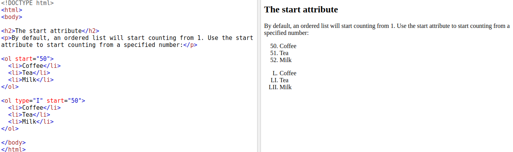

Note: List items can contain new list, and other HTML elements,
like images and links, etc.
(4) Control List Counting:
Control List Counting By default, an ordered list will start counting from 1. If you want to start counting from a specified number, you can use the start attribute:

(5) Horizontal List with CSS
HTML lists can be styled in many different ways with CSS.
One popular way is to style a list horizontally, to create a navigation menu:
Link to go NavBar >>